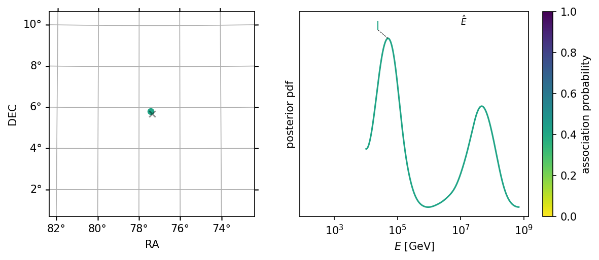
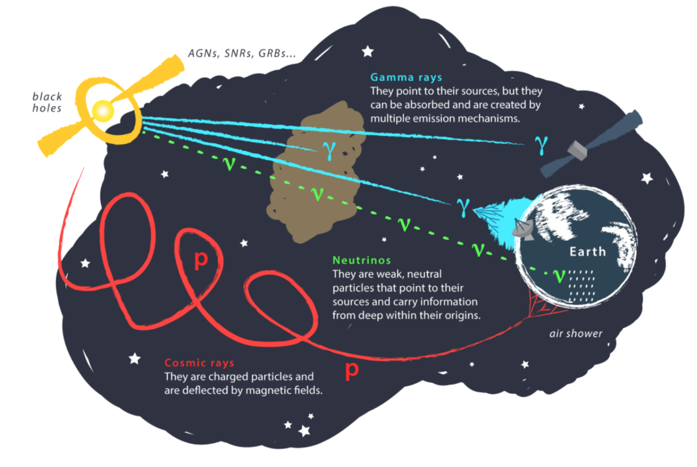
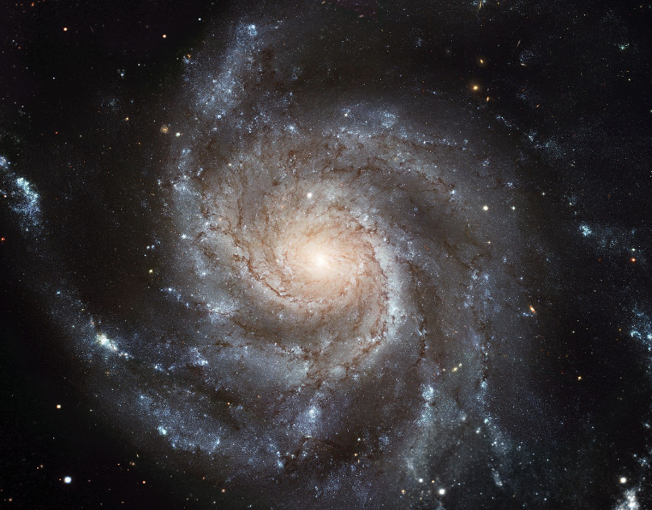

Research
These days, I find myself increasingly drawn to multi-messenger astrophysics, particularly in its application to the study of active galactic nuclei. I am intrigued by the potential of computational and statistical techniques in unraveling the mysteries surrounding these fascinating objects.
Publications
Selected refereed and preprint work. The complete, always-current list is on my INSPIRE-HEP profile and ORCID.
- Pierre Auger Collaboration, "Observation of the Moon and Sun shadows with cosmic rays at an average energy of 7×1017 eV", 2026. arXiv:2608.04658
- Pierre Auger Collaboration, "Depth of Maximum of Air-Shower Profiles above 1017.7 eV Measured with the Fluorescence Detector of the Pierre Auger Observatory", Phys. Rev. D 114, 043016 (2026). arXiv:2605.12598 · DOI
- "Impact of multi-messenger spectral modelling on blazar-neutrino associations", 2025 — work I contributed to during my Max Planck Institute for Physics internship. arXiv:2503.04632
Master's Thesis
In my thesis, I investigate how the upcoming Cherenkov Telescope Array Observatory (CTAO) can test competing high-energy emission models for NGC 1068, the first non-blazar AGN linked to neutrino emission. Using Gammapy simulations of 50, 100 and 150 hour CTAO observations, I compare scenarios driven by starburst activity and AGN-powered winds. The results show that most models are detectable within 100 hours of observation, and by 150 hours CTAO marginally distinguish between different emission mechanisms. Whether detected or not, these observations will provide powerful constraints on particle acceleration in obscured AGNs and help clarify the origin of neutrinos and gamma rays in Seyfert galaxies. You can read my thesis "Constraining the High-energy Emission of NGC 1068".
Hanrieder Fellowship Max Planck Institute for Physics

During a three month internship, I studied the association probability between the high-energy neutrino event IC170922A and the blazar TXS 0506+056 using Bayesian statistical techniques. We applied two different spectral models—power-law and pγ—to analyze how varying assumptions about the source spectrum affect the probability of a connection between the neutrino event and the blazar. You can read my internship report "Bayesian ICECAT Analysis". This research contributed to the article "Impact of multi-messenger spectral modelling on blazar-neutrino associations".
Bachelor thesis

Central American - Caribbean Bridge in Astrophysics Remote Internship
